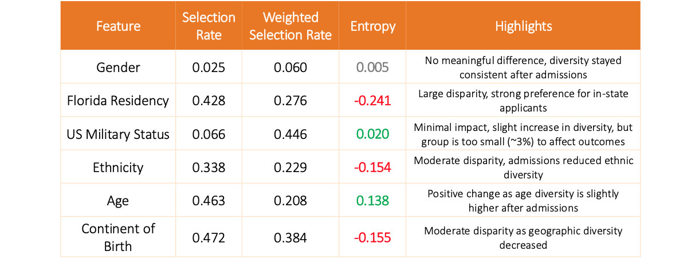
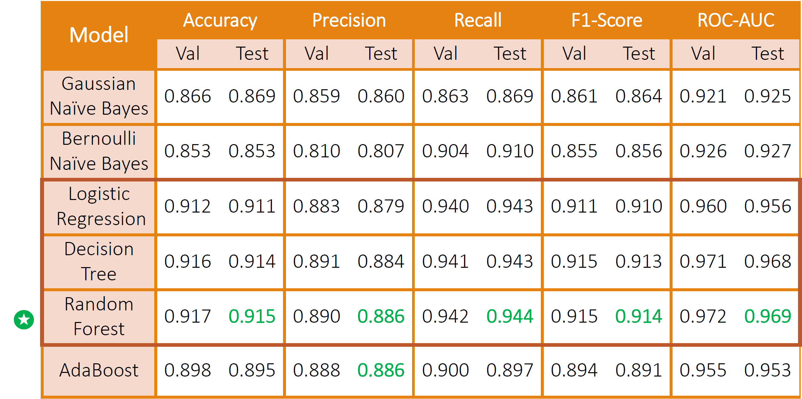
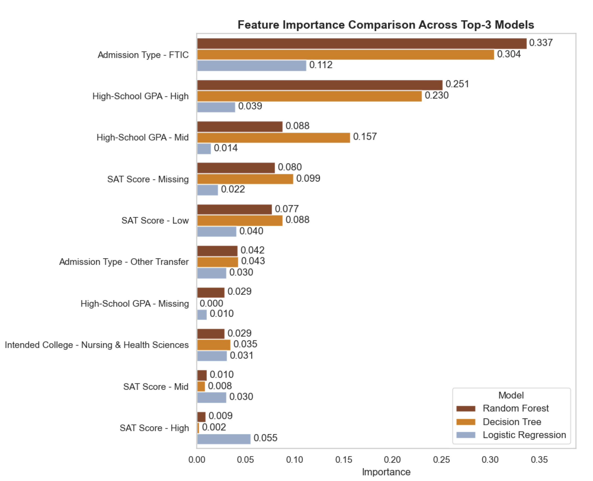
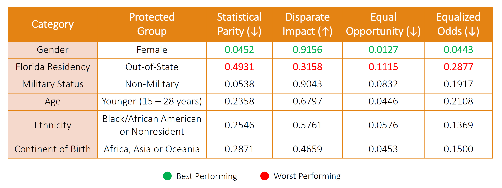

Predictive Modeling and Fairness in Higher Education:
A Case Study with FIU Admissions Data
Course: IDC-6940: Capstone Course in Data Science
Authors: Osmel Cereijo and Daniela Zaccardi
Course Instructor: Dr. Ananda M. Mondal
Mentor: Dr. Agoritsa Polyzou
Resources
For detailed results, references, source code, and dataset, please see:
- Presentation Slides: View Presentation Slides
- GitHub Repository: View on GitHub
- Dataset: FIU-provided dataset (restricted access)
I. Introduction
A. Background
Universities increasingly rely on predictive modeling and machine learning to support undergraduate admissions decisions, aiming to improve consistency and efficiency when evaluating large applicant pools. While these models can achieve strong predictive performance, they also raise concerns about fairness, as historical admissions data may encode structural inequalities related to academic preparation, residency policies, or demographic characteristics. If left unexamined, predictive systems risk reinforcing or amplifying these disparities. This project examines both the predictive accuracy and fairness of machine learning models applied to real undergraduate admissions data from Florida International University (FIU).
B. Goals and Objectives
The goals of this project are to explore how machine learning models can develop bias accross different groups and investigate methods to alleviate said bias while maintaining predictive accuracy. To achieve this, we focused on three key objectives:
- Predict admissions outcomes using FIU’s Fall 2024 undergraduate applicant dataset and identify which features contribute most strongly to model predictions.
- Evaluate fairness across different demographic groups to determine whether models exhibit disparate outcomes or measurable bias.
- Investigate which bias mitigation methods are most effective at reducing disparities while retaining strong model performance.
C. Research Questions
- How accurately can we predict admissions decisions?
- What features most strongly influence predictions?
- Does the model have bias, and if yes, which groups are the most effected?
- If bias exists, is it harmful or justifiable?
- What methods can detect, measure, and mitigate bias?
- How much bias can be effectively reduced without sacrificing accuracy?
D. Motivation
Admissions decisions play a critical role in shaping students’ educational opportunities and long-term outcomes. As predictive analytics become more integrated into institutional decision-making, there is growing legal, societal, and ethical pressure to ensure that these systems operate transparently and fairly. Public scrutiny of admissions practices and increasing awareness of algorithmic bias highlight the need for rigorous evaluation of both model performance and equity. Motivated by these concerns, this project seeks to provide evidence-based insight into how fairness issues emerge in admissions modeling and how they can be addressed responsibly without undermining model reliability.
II. Prior Art
Prior research on algorithmic decision-making in education has consistently emphasized the importance of explicitly measuring group-level fairness alongside predictive performance. Existing studies commonly evaluate bias using metrics such as statistical parity, disparate impact, equal opportunity, equalized odds, and subgroup error-rate differences, highlighting that overall accuracy alone is insufficient for assessing equitable model behavior. A recurring theme in the literature is the need to examine baseline group disparities before building predictive models, as underlying data imbalances often drive observed fairness gaps. Across this body of work, interpretable models such as decision trees, random forests, and logistic regression are frequently used due to their transparency and suitability for educational data. While these models typically achieve high predictive accuracy, prior findings consistently show degraded performance for minority or underrepresented groups. Together, these results reinforce the necessity of systematic fairness evaluation and targeted mitigation strategies when applying machine learning to high-stakes contexts like admissions.
III. Challenges
- Data quality and preprocessing
- Bias detection and measurement
- Bias mitigation trade-offs
- Model transparency and explainability
IV. Data Sources and Description
A. Data Source and Size
This project uses an anonymized undergraduate admissions dataset provided by Florida International University (FIU) admissions for Fall 2024 applicants.
After filtering to undergraduate applicants only, the final dataset contains ~30K applicants with 42 original features describing demographic attributes, academic background, standardized testing, and application details.

B. Data Preparation & Constraints
The dataset contained substantial missing values, particularly for standardized test scores and GPA measures. To address this, features with excessive missingness were removed, remaining values were consolidated where appropriate, and missingness indicators were added to preserve information without introducing bias.
Bellow is a summary of the data preparation workflow:

C. List of Features
Following data cleaning, consolidation, and feature selection, the final set of features retained for modeling and fairness evaluation is shown below.

D. Data Overview
The final dataset represents a diverse undergraduate applicant population from FIU’s Fall 2024 admissions cycle. Approximately half of the applicants were admitted, reflecting a moderately selective admissions process. Most applicants were first-time-in-college students, traditional college age, and Florida residents, consistent with FIU’s role as a large public university serving the state population. The applicant pool is ethnically diverse, with Hispanic/Latino applicants representing the largest group, followed by non-resident alien, White, and Black or African American applicants. Overall, the dataset captures meaningful variation across academic background, application type, and demographic characteristics, providing a strong foundation for both predictive modeling and fairness analysis.

V. EDA and Bias Investigation
A. Visualization Findings
Exploratory visualizations revealed clear differences in admission outcomes across several demographic and application-related attributes. While gender showed relatively balanced admission rates, other factors such as Florida residency, application type, age, ethnicity, and region of birth exhibited substantial disparities. In-state applicants and non-first-time-in-college applicants experienced significantly higher admission rates, reflecting institutional policies and structural constraints. Additionally, older applicants and certain ethnic or geographic groups showed more favorable outcomes compared to younger and international applicants. These visual patterns suggest that disparities in admissions outcomes are largely driven by underlying data structure and institutional context rather than isolated model behavior, motivating deeper quantitative fairness analysis.
B. Quantitative Metrics Analysis
To quantify disparities observed in the exploratory visualizations, we evaluated group-level fairness using Selection Rate, Weighted Selection Rate, and Entropy difference metrics. These measures provide complementary perspectives on how admission outcomes vary across demographic groups.
The below table summarizes the differences per metric and demographic feature. Entropy differences color-highlights represent: gray (neutral/no change), green (diversity increased), and red (diversity decreased).

VI. Methodology and Model Performance
A. Experimental Set-Up
The experimental workflow for this study follows the below steps:
- Split the dataset into training (80%) and test (20%) sets using a stratified split to preserve the original admission rate.
- Applied data pre-processing on the training set, including discretization of continuous features using k-means clustering and one-hot encoding of categorical variables.
- Performed hyperparameter tuning using 5-fold cross-validation to identify optimal model configurations.
- Retrained each model using the selected hyperparameters on the full training set.
- Evaluated final model performance on the held-out test set and compared results across models.
B. Baseline Model Selection
Several models were evaluated for admissions prediction, all achieving strong performance. Random Forest emerged as the best-performing model and was therefore selected as the baseline for further fairness evaluation and mitigation.
Feature importance was analyzed across the top-performing models to identify which attributes most strongly influenced admissions predictions. Across all models, academic preparation and application-related features—such as admission type, high-school GPA, and standardized test scores, consistently ranked among the most influential predictors. In contrast, demographic attributes were not among the top drivers of model decisions, suggesting that predictive performance is largely guided by academic and structural factors rather than sensitive characteristics.
Note: Logistic Regression coefficients were normalized to sum to 1 for comparison purposes.
VII. Fairness Evaluation
To assess whether model predictions differ across demographic groups, we evaluated fairness using multiple group-level metrics. These include Statistical Parity and Disparate Impact, which capture differences in selection rates between privileged and unprivileged groups, as well as Equal Opportunity and Equalized Odds, which measure disparities in true positive and error rates across groups. Together, these metrics provide a comprehensive view of both outcome-level and error-based fairness.
The table below summarizes fairness results for each demographic attribute, highlighting where disparities are minimal and where larger gaps persist. This comparison helps identify which groups are most affected and motivates the focus of subsequent bias-mitigation experiments.
Conclusion & Future Work
Conclusion
In our research we determined that all the models performed consistently strong across the board. Our analysis of the fairness metrics revealed consistent disparities across certain minority groups. Our findings also indicate that alot of the issues presented throughout the research were mostly data-driven structural patterns, not model specific. Lastly we also investigated and found that the demographic features of our data were not the top predictors for the models.
Our applied pre-processing techniques signficantly impoved the fairness metrics of our model. The predictive proformance of our models remained strong both when specifically targetting a group and also overall. We also determined that fairness can be improved without sacrificing to much accuracy from the models.
Future Work
We hope that in the future for this research we incoporate more semesters and additional demographic features that we saddly not provided in our original dataset. Things like the extra curriculars that the applciant has done, as well as other details that could help us infer more info of what the current situation for the applicant is. We would also like to explore more fairness-aware algoriths and bias mitigation techniques so that we could expand the potential of the models. As for our analysis we would like to explore more fairness metrics and also see how the models perform accross different intersectional groups. We would also want to split the analysis accross different application types to see if there are any trends that are specific to certain application type. Lastly we would want to explore deeper into trends happening overtime in relation to the semester cohorts being admitted.
Limitations
While this study provides meaningful insights into fairness and predictive modeling within undergraduate admissions, several limitations should be considered when interpreting the results.
- The analysis is based on FIU’s Fall 2024 applicant data, which reflects the unique demographic makeup and institutional policies of a large Hispanic-serving public university in Florida. As a result, patterns observed here may not generalize to other universities.
- Admissions outcomes in 2024 may have been influenced by geopolitical or policy-driven considerations outside the scope of this study.
- Certain features required assumptions due to missing or ambiguous information.
- FIU, like many public universities, operates under state-level policies that influence admissions decisions.
- Protected group definitions used in fairness evaluation (e.g., out-of-state vs. in-state, younger vs. older applicants) were tailored to this dataset. However, these definitions may differ in other states or institutions based on demographic composition, admissions priorities, or legal requirements.
- Each U.S. state operates under its own regulations regarding admissions, demographic reporting, and fairness considerations.